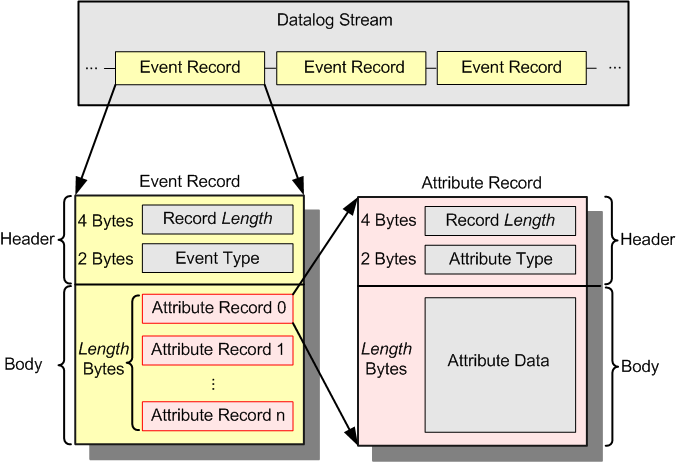

EDF data organization
This section describes how event and attribute data is organized. This background information is helpful for writing your own data logging tools that access the data stored in the data log stream.
Whenever a new event occurs during the execution of a production test, a new event record (which holds the complete data for that event) is written to the data log stream. The data log stream thus consists of a series of event records. As every event is characterized by a number of attributes, every event record contains a set of attribute records.
The figure below shows the internal structures of an event record and an attribute record that is part of it. Both records consist of a header section and a body section.
For performance reasons, the data log information is written to the data log stream in a binary format. This allows fast and compact data logging.

Event record
An event record consists of a header and a body:
- The header section of an event record contains two elements:
- The Record Length element is a field four bytes long that holds the length of the event record body. This is needed to find the beginning of the next event record.
- The Event Type element is a field two bytes long that holds the symbolic name of the event as defined in the header file dcl_drl.h.
- The body section consists of a list of attribute records. These attribute records hold all the data that comes with the event. The number and the types of attribute records depend on the type of the event.
Attribute record
An attribute record consists of a header and a body:
- The header section of an attribute record contains two elements:
- The Record Length element is a field four bytes long that holds the length of the attribute record body. This is needed to find the beginning of the next attribute record in the event record body.
- The Attribute Type element is a field two bytes long that holds the type of the attribute, for example, DeviceAttrType.
- The body section holds the attribute data according to the attribute type.
Data retrieval library
If you want to access data in the data log stream, you can use the functions of the Data Retrieval Library, which runs on Linux only. The DRL functions let you read data from the binary data log stream. The library also provides a full set of data types to hold and process all the data read.
Note that little-endian byte order is used, that is, the least significant byte is stored first, which is the native Intel x86 byte order.
The available event and attribute types are defined in the header file /opt/hp93000/soc/com/include/dcl_drl.h.
Functional changes
- Introduced before SmarTest 6.3.2
- SmarTest 7.2.0: Changed byte order to little-endian